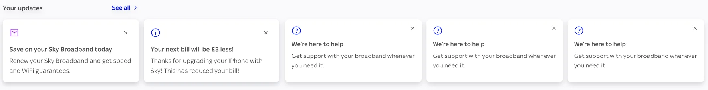

Customer Guidance Rail
An ordered list of the actions a customer must, should and could take. It was functionally sound, but it didn't feel like Sky.
- Does the right thing. It delivers the right personalised information at the right time.
- Simplifying. The title alone gives you everything you need at a glance.
- Not creative. It uses an expected pattern and doesn't bring the brand to life.
- Not welcoming. There's little focus, and no sense of settling into the experience.
